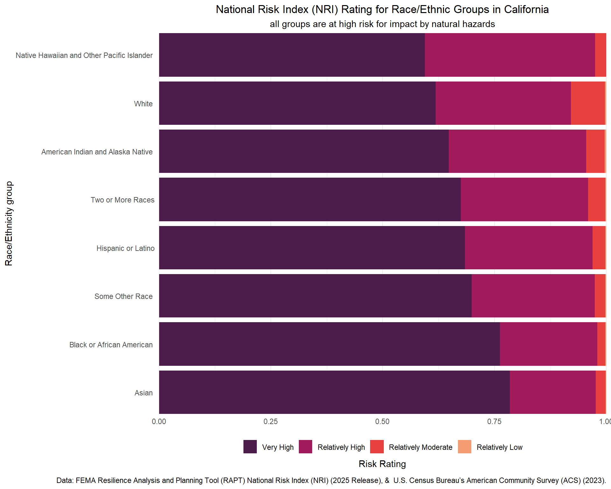

# Read in libraries
library(tidyverse)
library(here)
library(janitor)
library(stringr)EDS 240 HW3: Visualizing FEMA NRI x ACS Data
Setup
Reading in data
# # #....Step 1a: see all available ACS variables + descriptions.....
# acs_vars <- tidycensus::load_variables(year = 2023,
# dataset = "acs1")
#
# # #..............Step 1b: import race & ethnicity data.............
# race_ethnicity <- tidycensus::get_acs(
# geography = "county",
# survey = "acs1",
# # NOTE: you may not end up using all these variables
# variables = c("B01003_001", "B02001_002", "B02001_003",
# "B02001_004", "B02001_005", "B02001_006",
# "B02001_007", "B02001_008", "B03002_012",
# "B03002_002"),
# state = "CA",
# year = 2023) |>
# # # join variable descriptions (so we know what's what!)
# dplyr::left_join(acs_vars, by = dplyr::join_by(variable == name))
#
# # #.................Step 2: write ACS data to file.................
# readr::write_csv(race_ethnicity, here::here("data", "ACS-1yr-2023-county-race-ethnicity.csv"))
#..................Step 3: read in your CSV file.................
race_ethnicity <- readr::read_csv(here::here("data", "ACS-1yr-2023-county-race-ethnicity.csv"))
# Read in NRI and filter for only California
nri <- read_csv(here(
"data",
"National_Risk_Index_Counties_807384124455672111.csv"
)) %>%
clean_names() %>%
filter(state_name %in% "California")Building vizualization
goal: Create a data viz that helps to answer the question, How does climate hazard risk exposure vary across racial / ethnic groups in California?
Data cleaning and join
# Clean new ACS data
re_df <- race_ethnicity %>%
# convert column names to lower snake case
clean_names() %>%
# Split column on comma
separate_wider_delim(
cols = name,
delim = ",",
names = c("county_name", "state")
) %>%
# remove all text before !!
mutate(label = str_remove(label, pattern = ".*!!")) %>%
# Filter out random non hispanic and latino rows
filter(!label %in% "Not Hispanic or Latino:") %>%
# Remove colons and the word alone from race/ethnicity label
mutate(label = str_remove(label, ":")) %>%
mutate(label = str_remove(label, "alone")) %>%
# Remove county part of county name and any whitespace
mutate(county_name = str_remove(county_name, "County")) %>%
mutate(county_name = str_squish(county_name))
# Join dataframe on county
nri_acs <- full_join(x = re_df, y = nri, by = "county_name") %>%
# Select only desired columns
select(county_name,
estimate,
label,
national_risk_index_rating_composite)Preliminary data wrangling and viz
# Create new data frame with percentages of each group represented by NRI risk rating
perc_risk_cat <- nri_acs %>%
# Grouping by race/ethnicity and rating category
group_by(label, national_risk_index_rating_composite) %>%
# Create new column with the total number of people in those categories
summarize(total_pop = sum(estimate)) %>%
# Drop NAs
drop_na(label) %>%
# Group again by group identity
group_by(label) %>%
# New column with the percentage of each group in each category
mutate(perc = total_pop / sum(total_pop)) %>%
# Remove "total" as a group
filter(!label %in% "Total")
# Reorder based on amount of people at high risk
label_order <- perc_risk_cat %>%
filter(national_risk_index_rating_composite == "Very High") %>%
arrange(desc(perc)) %>%
pull(label)
# Overwrite dataframe with levels
perc_risk_cat <- perc_risk_cat %>%
mutate(
# Order lable by descending high risk percent
label = factor(label, levels = label_order),
# reorder ratings so they show up high to low on graph
national_risk_index_rating_composite = factor(
national_risk_index_rating_composite,
levels = c(
"Relatively Low",
"Relatively Moderate",
"Relatively High",
"Very High"
)
)
)ggplot(data = perc_risk_cat,
aes(
x = label,
y = perc,
# Group and color by rating
group = national_risk_index_rating_composite,
fill = national_risk_index_rating_composite
)
) +
# Stacked cols chart
geom_col() +
# Flip race and ethnicity labels to y
coord_flip() +
# Remove padding around axes
scale_y_continuous(expand = c(0, 0))+
scale_x_discrete(expand = c(0, 0))+
# Fill discrete colors
scale_fill_viridis_d(
option = "rocket",
# Reverse for darker = higher
direction = -1,
# Shrink color scale for visuals
begin = 0.2,
end = 0.8
) +
# Minimal theme
theme_minimal() +
# Edit legend
guides(fill = guide_legend(
# Legend title
title = "Risk Rating",
# Place title on bottom of legend
title.position = "bottom",
# Put legend on the bottom of the chart
position = "bottom",
# Reverse order for readability
reverse = TRUE
)) +
# Add plot labels, caption, and alt text
labs(
title = "National Risk Index (NRI) Rating for Race/Ethnic Groups in California",
subtitle = "all groups are at high risk for impact by natural hazards",
x = "Race/Ethnicity group",
caption = "Data: FEMA Resilience Analysis and Planning Tool (RAPT) National Risk Index (NRI) (2025 Release), & U.S. Census Bureau’s American Community Survey (ACS) (2023).",
alt = "Proportional stacked bar chart showing the proportion of race/ethnic groups in California in eachmrelative National Risk Index (NRI) rating category (Very High to Very Low). The groups being represented are White, Black or African American, American Indian and Alaska Native, Asian, Native Hawaiian and Other Pacific Islander, Some Other Race, Two or More Races, and Hispanic or Latino. 50 to over 0.75 percent of each group experienced Very High risk of impact by natural hazards, with the group at most high risk being Asian. The group with the greatest proportion of Moderate Risk individuals was White."
)+
# Adjust theme elements
theme(
axis.title.x = element_blank(),
# Adjust title position
plot.title = element_text(hjust = 0.5),
plot.subtitle = element_text(hjust = 0.5),
legend.title = element_text(hjust = 0.5)
)
Discussion
- What are your variables of interest and what kinds of data (e.g. numeric, categorical, ordered, etc.) are they (a bullet point list is fine)?
In this visualization, I was interested in understanding what proportion of each race/ethnicity group defined by ACS fell under each category of NRI risk rating category. I used the categorical ‘label’ variable from ACS and ‘national_risk_index_rating_composite’ variable from FEMA NRI, and calculated the proportion (numeric) of each group in each NRI category.
- How did you decide which type of graphic form was best suited for answering the question? What alternative graphic forms could you have used instead? Why did you settle on this particular graphic form?
I wanted to directly compare proportions across groups so a flipped proportional bar plot made sense to do this without visual strain. I thought about using donut plots or a scatter plot by county, but thought those would be too hard to interpret or too much information for one graph. There is already a lot to take in between 3 variables, so throwing in more elements seemed like a bad choice.
Summarize your main finding in no more than two sentences. All race/ethnicity groups in California experience mostly “Very High” risk of impact from natural hazards, followed by “Relatively High”, and “Moderate”. The most high risk group was “Asian”, with Pacific Islanders/ Native Hawaiians experiencing the least “Very High” risk, but the most “Relatively High” risk.
What modifications did you make to this visualization to make it more easily readable? The main way I tried to make the visual more readable was by reordering the categorical variables as factors so that readers could clearly visualize high risk in a logical order and not have too much eye movement to interpret the order of the legend. I also decided to flip the axes so that readers wouldn’t have to turn their heads to read the numeric scale.
Is there anything you wanted to implement, but didn’t know how? If so, please describe. Not particularly, I was able to access resources to complete the visual I had in mind fairly easily because it wasn’t a nontraditional style of plot.